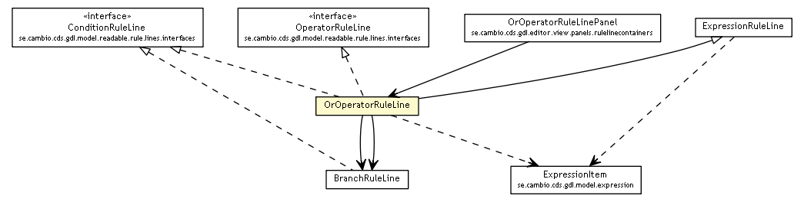

se.cambio.cds.gdl.model.readable.rule.lines
Class OrOperatorRuleLine

java.lang.Object
 se.cambio.cds.gdl.model.readable.rule.lines.RuleLine
se.cambio.cds.gdl.model.readable.rule.lines.ExpressionRuleLine
se.cambio.cds.gdl.model.readable.rule.lines.OrOperatorRuleLine
se.cambio.cds.gdl.model.readable.rule.lines.RuleLine
se.cambio.cds.gdl.model.readable.rule.lines.ExpressionRuleLine
se.cambio.cds.gdl.model.readable.rule.lines.OrOperatorRuleLine
- All Implemented Interfaces:
- ConditionRuleLine, OperatorRuleLine
public class OrOperatorRuleLine
- extends ExpressionRuleLine
- implements ConditionRuleLine, OperatorRuleLine
| Methods inherited from class se.cambio.cds.gdl.model.readable.rule.lines.RuleLine |
addChildRuleLine, detachFromParent, getChildrenRuleLines, getDescription, getLevelSpace, getName, getParentRuleLine, getRuleLineElements, getTermDefinition, isCommented, setTermDefinition, toHTMLString |
OrOperatorRuleLine
public OrOperatorRuleLine()
getLeftRuleLineBranch
public BranchRuleLine getLeftRuleLineBranch()
getRightRuleLineBranch
public BranchRuleLine getRightRuleLineBranch()
setCommented
public void setCommented(boolean commented)
- Overrides:
setCommented in class RuleLine
toExpressionItem
public ExpressionItem toExpressionItem()
- Specified by:
toExpressionItem in class ExpressionRuleLine
toString
public String toString()
- Overrides:
toString in class RuleLine
toHTMLString
public String toHTMLString(int level)
- Overrides:
toHTMLString in class RuleLine
Copyright © 2013 Cambio. All Rights Reserved.